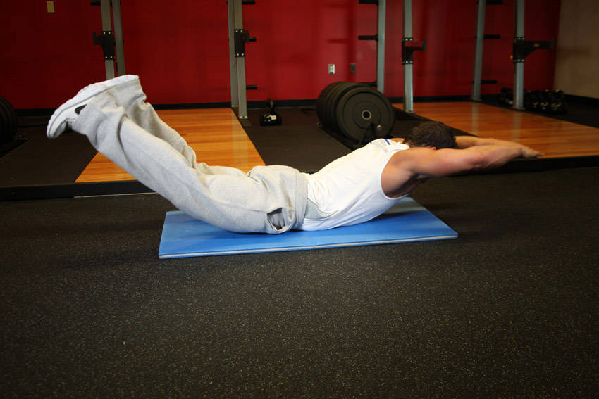

- To begin, lie straight and face down on the floor or exercise mat. Your arms should be fully extended in front of you. This is the starting position.
- Simultaneously raise your arms, legs, and chest off of the floor and hold this contraction for 2 seconds. Tip: Squeeze your lower back to get the best results from this exercise. Remember to exhale during this movement. Note: When holding the contracted position, you should look like superman when he is flying.
- Slowly begin to lower your arms, legs and chest back down to the starting position while inhaling.
- Repeat for the recommended amount of repetitions prescribed in your program.